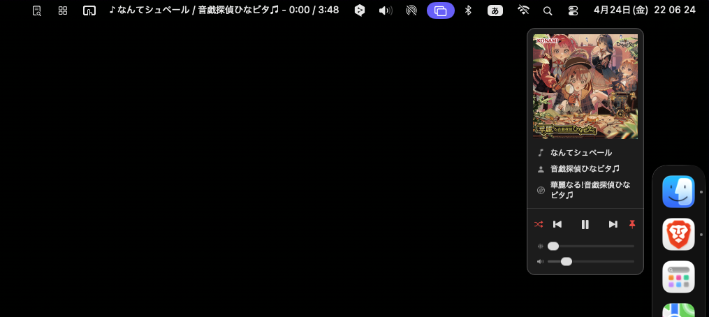

menumusic
menumusic.
macOS のメニューバーから Music.app を操作するための、小さな常駐アプリ。

01 できること
Music.app でプレイリスト運用をメインにしている方に向けて作ったアプリです。
-
メニューバー表示再生中の曲名・アーティスト・アルバム名・経過時間を 1 行で表示。表示する項目はそれぞれオン / オフで選べます。
-
再生コントロールメニューバーを左クリックすると操作パネルが開き、再生 / スキップ / シーク / 音量をその場で操作できます。
-
通知パネル操作パネルが開いていないときに曲が変わると、アートワークと曲名が画面上にふわっと表示され、数秒で自動的に消えます。
-
ループ切替オフ / 1 曲 / 全曲 を切替。
-
右クリック設定表示項目・常に最前面・プレイリスト一覧などの設定。
02 ダウンロード
※ このアプリは Apple の開発者署名を付けていません。そのため、初回起動にはひと手間必要です。下のインストール手順をご確認ください。
03 インストール
- ダウンロードした menumusic.dmg をダブルクリックでマウントし、開いたウインドウ内の menumusic.app を アプリケーション フォルダにドラッグして入れる。
-
Finder で menumusic.app を右クリック（または control + クリック）→ 「開く」を選ぶ。
「開発元を確認できないため開けません」という警告が出ますが、そのまま「開く」を押してください。初回だけ必要な手順です。 - メニューバーに小さな♪アイコンが出ます。Music.app で曲を再生すると、曲名や経過時間が表示されます。
04 うまく起動しないとき
- 「"menumusic" は壊れているため開けません」と出る
-
macOS のセキュリティ機能（Gatekeeper）がブロックしています。ターミナルを開いて、以下を 1 行コピー＆ペーストして実行してください。パスワードを聞かれたら Mac のログインパスワードを入力します。
xattr -cr /Applications/menumusic.app
その後、手順 2 と同じように右クリック →「開く」で起動できます。 - macOS Sequoia（15）以降で「開く」ボタンが出ない
- 右クリック →「開く」を試してブロックされた後、システム設定 → プライバシーとセキュリティ を開きます。画面を下にスクロールすると「"menumusic" は開発元を確認できないため使用がブロックされました」という項目があるので、隣の 「このまま開く」 を押してください。
- 曲情報が表示されない・更新されない
- 初回起動時に Music.app の操作許可を求めるダイアログが出ます。「OK」を押してください。間違って「許可しない」を押した場合は、システム設定 → プライバシーとセキュリティ → オートメーション から menumusic の「ミュージック」を ON にしてください。
05 動作環境
— OSmacOS 13.0 以降
— CPUApple Silicon / Intel（Universal）
— 必須Music.app
— バージョン0.5.0
— 価格無料
— 署名なし
古いOSで動作確認はしていませんが、多分動くと思います…